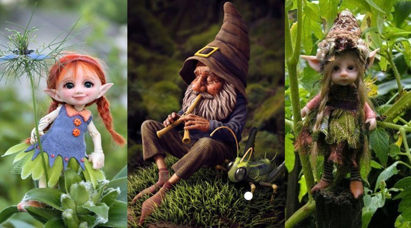
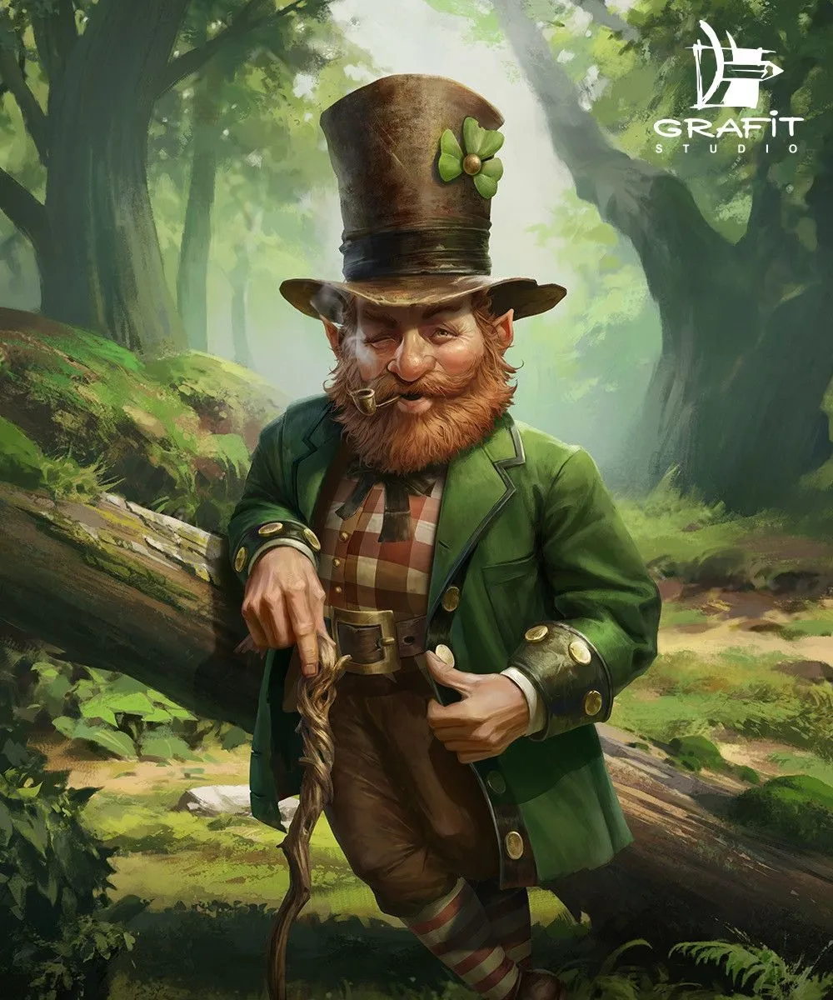
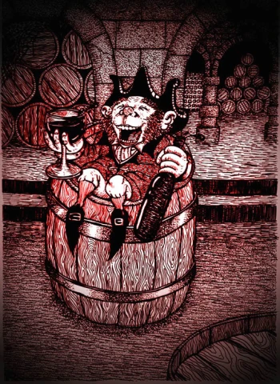
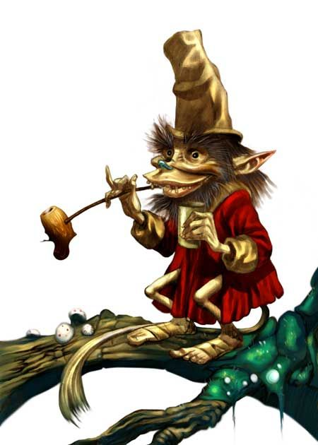
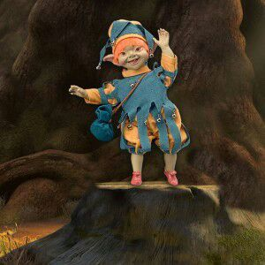
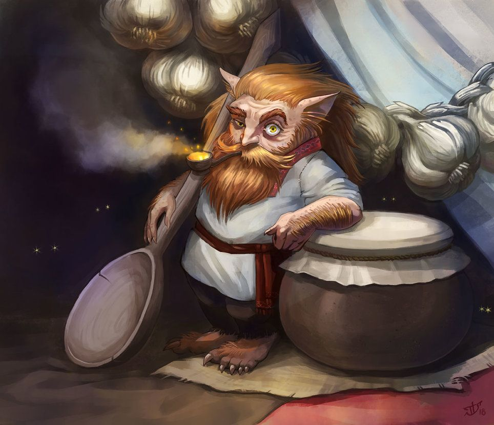
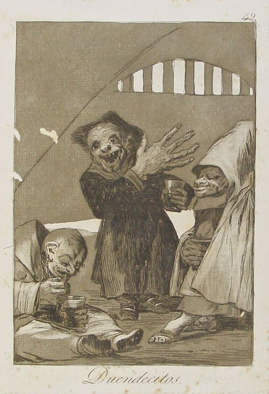
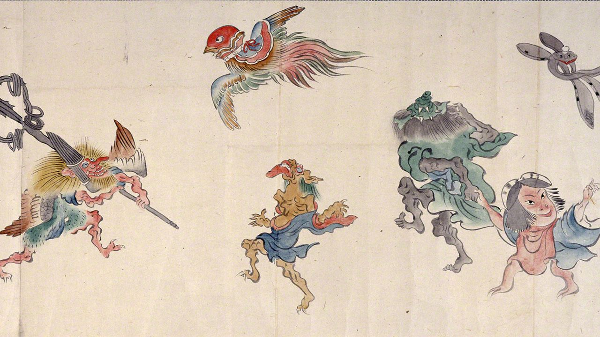
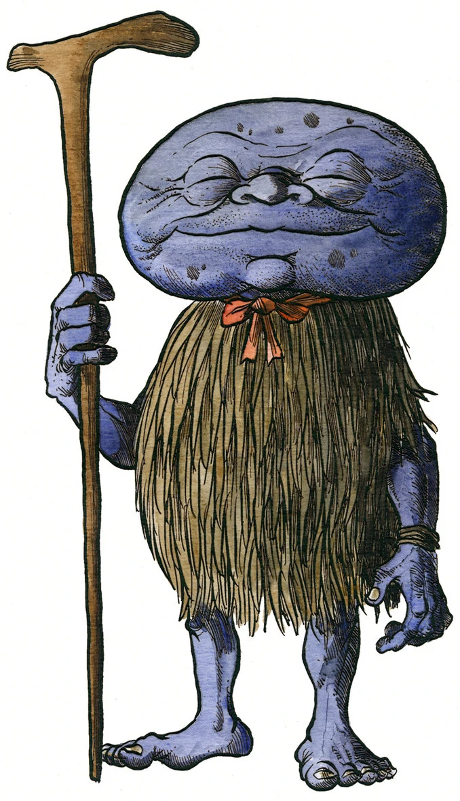

¿Qué son los duendes y de dónde vienen?
Los duendes son un tipo de hadas que se encuentran en el folklore irlandés, más a menudo reconocidas por su icónica olla de oro al final del arco iris. Según la leyenda, son criaturas solitarias que pasan su tiempo haciendo y remendando zapatos.Físicamente, se suele describir a los duendes como personajes de baja estatura (con altura no superior a un metro) y aspecto humanoide, con largas orejas puntiagudas y piel verdosa. Se caracterizan por ser seres elementales, cuidadores de la naturaleza y el bosque y muy escurridizos. En la mitología de muchas culturas se les supone algún tipo de poder o conocimiento sobrenatural además de una personalidad bromista o maliciosa, por el cual son culpados de todo tipo de daños menores en el entorno doméstico o rural. Según esta definición, serían considerados un tipo de duendes los gnomos, los trasgos, el tomte sueco, el leprechaun irlandés o el poltergeist alemán.
Los primeros duendes fueron retratados como hombres pequeños y ancianos que se encontraban en los huecos de los árboles y en las madrigueras de los conejos en las zonas rurales. Llevaban un abrigo rojo, ya que el rojo era el color simbólico de las hadas, un sombrero puntiagudo y delantal de cuero. A menudo tenía gafas posadas en la nariz y una pipa en la boca. Aunque esta representación variaba ligeramente de una historia a otra. 
En 1825, el historiador irlandés Thomas Crofton Croker publicó una colección de cuentos populares irlandeses que describían al duende como un zapatero barbudo con hebillas en los zapatos y una tendencia al engaño. Este concepto permanece casi inalterable desde entonces. Sin embargo, en el siglo XX su vestuario en la cultura popular cambió de rojo a verde.
Su hábitat general son los bosques, aunque algunos habitan en los jardines y los fondos de ciertas casas, propicias para ello, ya que a estos alguna vez simpáticos hombrecillos les agrada la compañía de los niños, así como a las hadas (por su pureza de corazón), para jugar con ellos. Son de buen carácter; estando por lo tanto casi siempre de buen humor. Aunque también existen duendes malvados, capaces de hacerle daño a los humanos, si estos los enojan. Por ese motivo es conveniente evitar ofenderlos, por ejemplo, dudando de su existencia, de sus poderes o burlándose de su apariencia.
Historia
Los duendes son criaturas mágicas relacionadas en algún caso con las hadas que no forman parte de la tradición cristiana, aunque algunos demonólogos de los siglos XVI y XVII, y al menos desde la segunda mitad del siglo XV, los consideraban un tipo de demonio.Este tipo de supersticiones ligadas a los hogares fueron difundidas por todo el Imperio romano, ya que su religión pagana afirmaba que había unos dioses menores, los lares o genius loci, que habitaban una casa a la que estaban ligados con la función de protegerla. A veces estaban asociados a la familia que construyó la casa o que la habitó desde que fue construida, esto explicaría su frecuente relación con los fuegos del altar familiar u hogar, los pucheros o las alacenas. A esto habría que sumar una noción semejante por parte de los druidas, quizá todavía presente en la creencia germánica en los Kobold. Pero esta tradición se presenta también en el folklore de todas las naciones eslavas, donde son llamados domovik, e incluso en el japonés, donde unas criaturas en todo semejantes se denominan zashiki-warashi. Por lo demás, los djinn de los pueblos semíticos poseen características muy parecidas. La superstición, por otra parte, podría tener una etiología bastante elemental: una justificación maravillosa o imaginativa de los ruidos desconocidos que se producen en las alacenas, sótanos o cuevas subterráneas cerradas de las casas, casi siempre debidos a la presencia de pequeños roedores o depredadores en busca de alimento.
Es más, aparte de su origen supersticioso, la leyenda de la llamada "gente pequeña", como los denominaba en su famoso manuscrito el párroco escocés Robert Kirk,5 o "duendes", está tan arraigada en unos lugares concretos de Europa (islas británicas) que algunos han llegado a teorizar la posible existencia de un pueblo humano de pequeña estatura ya desaparecido en estas ubicaciones, lo que ha convertido en más probable el descubrimiento reciente del hombre de Flores y el ya conocido pueblo pigmeo en África.
Duendes en otras culturas
Europa
Uno de los tipos más reconocidos en la actualidad es la del leprechaun, proveniente de Irlanda y popular durante las festividades de San Patricio, como las que se llevan a cabo en Estados Unidos. La imagen moderna del leprechaun es la de un hombrecillo barbado bajo, de aire alegre y a veces gruñón, vestido con atuendos de color verde, aunque en las leyendas folclóricas irlandesas su carácter era menos afable y solían vestir con ropajes rojos. Los leprechaun forman parte del ciclo de leyendas irlandesas relacionadas con los Tuatha Dé Danann. Otros tipos de duendes irlandeses son los cluricaun (aficionados a las bebidas embriagantes) y los far darrig (hombres rojos).

Claricaun

Far darrig
De Escocia, otro país celta, provienen las leyendas de los hobgoblins y los puck. Estos seres son descritos como espíritus traviesos relacionados con la tierra. El hobgoblin es un ser humanoide, pequeño y peludo, que vive en las casas y hace travesuras por la noche mientras todos duermen. Al puck se le caracteriza con un aire más similar a los pixis del folclor británico, sobre todo de Cornualles. Mientras el hobgoblin es pequeño y tosco y habita en las casas de los campesinos, el puck y el pixie son más esbeltos y viven en los bosques. 
Otro tipo de duende del norte de las islas británicas es el brownie o urisk, similar al hobgoblin aunque un poco más pequeño, peludo y ataviado con un manto o capucha de color café, y que habita en las casas ayudando por las noches con las labores cotidianas.
En el folclor escandinavo también hay varios tipos de duendes. Los duendes escandinavos se encuentran asociados al solsticio de invierno, y en la actualidad, a la Navidad. Su apariencia moderna es la del arquetípico duende de jardín o duende navideño: diminutos, ataviados con ropajes de colores brillantes, sombreros cónicos puntiagudos y una barba larga, sin embargo, en las tradiciones folclóricas escandinavas se les describe como hombres viejos y pequeños vestidos a la usanza rural campesina, de carácter voluble, a veces alegres y traviesos, otras veces iracundos y vengativos, que tienen la capacidad de volverse invisibles o tomar diversas formas. Reciben diversos nombres según el país: tomte en Suecia, nisse en Noruega y Dinamarca, y tonttu en Finlandia. Su presencia es frecuente en la literatura escandinava, como en los cuentos de Hans Christian Andersen.
En el folclor eslavo, el domovoi es un ser de pequeña estatura, cubierto de pelo, que es considerado guardián de las viviendas. Estos seres tienen el poder de transformarse en animales, como gatos o perros, o incluso puede adoptar la forma del propietario de la casa. Los eslavos solían invitar al domovoi a quedarse en las casas, pues ayuda a mantener todo en orden, mientras esté a gusto, pero, si esto cambia, el domovoi se enoja y destroza platos, cambia las cosas de sitio y gime por las noches.
Para los pueblos sajones de Inglaterra, Gales, Alemania y Países Bajos, los goblins eran criaturas monstruosas y de apariencia grotesca, a menudo de carácter malvado y egoísta, ávidas por el oro y las posesiones materiales. Eran criaturas mágicas con diversas habilidades, similares a las de las hadas o los demonios. Los goblins aparecen frecuentemente en la literatura moderna, como en los libros de Tolkien, y también son parte de juegos de rol y videojuegos como Warhammer o World of Warcraft. Similar al goblin, pero de carácter más benigno y hogareño, es el kobold, perteneciente al folclor de Alemania. El kobold era parte del mundo espiritual, pero a veces interaccionaba con los humanos. Se le podía representar con formas animales, como fuego, con forma humanoide o como objetos, a veces se disfrazaban como campesinos o niños pequeños. Los kobolds podían vivir bajo tierra y trabajar como mineros, pero a veces hechizaban y vivían en castillos y barcos. Al igual que otros tipos de duendes, en ocasiones ayudaban a los hombres en las tareas hogareñas.

En el folclor de Rumania, el spiriduș era una pequeña criatura cuyo carácter podía ser bueno o malo. Su apariencia es similar a la del leprechaun irlandés. El sufijo -uș es un diminutivo de la palabra espíritu, en un significado más asociado al término "fantasma". En Francia, el lutin de Normandía juega un papel similar al de los espíritus hogareños de las tradiciones de Inglaterra, Alemania y Escandinavia. El lutin también es un duende travieso, pues le gusta amarrar en trenzas las crines de los caballos. Los lutin han pasado del folclor francés a América, sobre todo en la provincia de Quebec, en Canadá, o en la leyenda del "nain rouge" (enano rojo) que hechiza la ciudad de Detroit, Michigan. El mazapégul es un tipo de duende hogareño de la región de la Romaña, en Italia. Su aspecto es la de un ser humanoide pequeño, de pelaje gris, que a veces podía ser bueno pero volverse maligno si se enfadaba.
Los duendes castellanos
Cabe distinguir entre los duendes castellanos a martinicos, diaños, trasgos, gnomos, encantadas, hadas y elfos. Los martinicos, emparantados con los bestiones de la Edad Media y grabados en algunos de los Caprichos de Goya, son enanos cabezones (representados como cabezudos en las fiestas populares) de grandes manos que se suelen disfrazar con hábito franciscano, hacen ruido en las alacenas, mueven y pierden objetos cuando no los ven y gastan crueles chascos y bromas. 
Asia
En Japón, existen unos seres denominados como Yokai, y hay un número incontable de ellos, y algunos son demasiados extraños como para encajar en alguna categoría. Estos son generalmente la transformación de una cierta clase de perversión o de criaturas halladas en la vida común, o son enteramente nuevos tipos de duende. Algunos ejemplos son el abura-sumashi, un goblin o duende viejo, con aire satisfecho con cara de patata, que bebe aceite; el ami-kiri, criatura que existe con el único propósito de cortar la red del mosquito; y el ushi-oni, demonio vaca que se representa a veces con el cuerpo de una araña gigante. El ningyo es una persona-pez, pero no una sirena, porque tiene medio cuerpo superior de pez. Existe la leyenda del Abura-sumashi. Este espíritu que sorprende a las personas en el paso de las montañas, se piensa que es el fantasma de un humano que robaba aceite. En los días anteriores a la electricidad, el aceite era una comodidad muy valiosa, necesaria para calentar y alumbrar una casa. En la actualidad el abura-sumashi es representado como un ser que usa un abrigo de paja que le cubre el cuerpo y una cabeza con forma de piedra o papa. Esta apariencia es inspirada en los trabajos de arte de Shigeru Mizuki.

Anécdotas de duendes reales
“Vengo a contar la historia de mi mamá lol jsjajBueno, la cosa es que yo soy de Bolivia y mi mamá también.
La cosa es que ella de pequeña hablaba con los duendes.
Me cuenta que en la casa de mi abuela ella en el patio jugaba con ellos (el patio era muy grande) los duendes la llevaban muy al fondo del patio para jugar, hasta tenía uno en especial que lo llamaba toñito.
Ella jugaba con él todos los días, decía que toñito era muy amigable, pero era muy feo. Dice que ella le decía que era muy feo, y toñito la rasguñaba, y ella iba corriendo donde mi abuela a contarle (mi abuela le creía porque toda mi familia tiene experiencias con ellos, porque dicen que son parientes o amigos que no fueron bautizados y vienen a visitarnos o algo así) bueno la cosa es que como mi mamá le avisaba a mi abuela, toñito se enojaba más y pues la pegaba a mi mamá.
También había una vez que mi mama se puso a jugar con él pelota (de básquet) mi mamá dice que él nunca atrapaba la pelota y mi mamá lo regañaba porque él no sabía jugar, así que ese día toñito la rompió la pelota (porque tenía una mano de fierro y otra de Lana así dice mi mamá)
También había veces que mi mamá llegaba de la escuela y se iba a jugar con toñito, y toñito le hacía muchas trenzas a mí mamá.
Hubo un día que mi mamá estaba jugando con toñito y mi mamá le dijo que ya no quería jugar con él (porque mi abuela le había dicho que ya no juegue con el porque la pegaba mucho) así que toñito al escuchar esto de mi mamá toñito pregunto con qué brazo quería que le pegue el ( siempre que le quería pegar a mi mamá, le preguntaba eso, como tenía un brazo de Lana y otro de metal, mi mamá le decía con el de Lana, y el le pegaba con el de Lana pero dice que igual pegaba fuerte) ese día mi mamá le dijo con el de Lana como siempre, pero ese día toñito no le hizo caso y la pegó con el de metal. Mi mamá se enojó con él y se fue llorando donde mi abuela, porque le había dejado arañado desde el hombro hasta la pierna. Mi abuela ya estaba enojada, así que llamó a un padre para que eche agua bendita. Después de eso toñito no volvió a aparecer en la casa de mi abuela, ni aparecerse a mi mamá.”
“Mi papá cuando era joven vio un duende. La historia comienza así:
A él le encantaban los peluches tenía de todos los tamaños; regresó de su trabajo y se acostó en su cama repleta de peluches, en ese entonces tenían un perro así que este se acostó en las piernas de mi papá.
Dice que su cuerpo estaba totalmente relajado, pero sintió que algo un poco pesado le cayó en su pecho abrió un poco los ojos y vio a un ser pequeño muy feo, vestía con pantalones y un chaleco verde. El trato de moverse sin embargo estaba muy débil, movió débilmente sus piernas para despertar al perro, el cual no respondía, recuperó su fuerza y se levantó asustado, el duende brincó hacia los peluches, mi padre removió cada peluche y no encontró nada.
Hasta el día de hoy no olvida la imagen del duende el cual le da mucho miedo.”
“Yo recuerdo muy bien que cuando era niña, estaba en casa de una de mis tías, ella vivía sola con su mamá. Un día, jugando normalmente como una niña de 6 años ví pasar a alguien hacia una de las habitaciones. Fui a ver cómo toda niña curiosa y recuerdo a un hombrecito pequeño muy feo, vestido de verde que solo estaba parado ahí como si nada (lo recuerdo muy bien), tenía zapatos desgastados, como siempre los pintan en los cuentos. Y solo me miraba, con una sonrisa. No sé si ese día aquel hombrecito quería llevarme, pero, mamá me vio desde la sala de una manera muy extraña y entró. En el momento en que lo hizo el hombrecito desapareció. Desde niña soy muy talentosa dibujando, me pidieron que dibujara a la criatura que había visto, así que al terminarlo vieron que era un duende. Y mi tía supo el porqué se "desaparecían" sus cosas y las encontraba hasta arriba de su clóset, escondidos.”